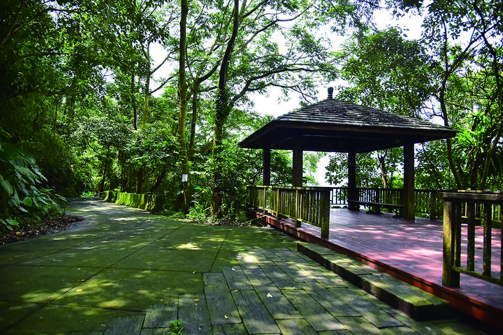
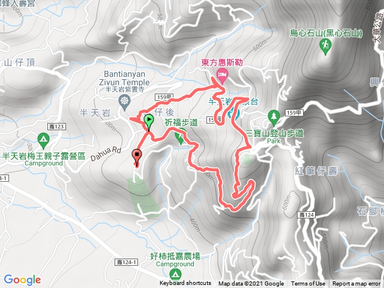

知不知番路
關於番路
番路氣象
步道地圖
嘉義縣番路鄉
祈福步道
半天岩原本的遊憩範圍，僅限於紫雲寺與昇龍觀音廣場周邊。2009年，阿里山國家風景區管理處將鄰近農路串聯起來，並修建涼亭等設施，成為這條健行步道。
步道的兩端，分別在西側的「石頭公公園」，以及東側「159甲」縣道與「嘉124」鄉道交會處。從石頭公公園出發，首先來到「蔡厝」這個蔡姓家族組成的聚落。淳樸的農村氣息，彷彿回到往日時光。
走進往山林深處延伸的農路，柿子、柑橘等果樹，呈現美好的鄉村景致。沿途豐富多樣的低海拔次生林，闊葉樹及後期造林的楓香、杉木，以及絹毛鳶尾、龍船花等林間植物展現蓬勃生機，樹梢草叢間此起彼落的蟲鳴鳥叫也充滿朝氣。
過了幾處緩升的迴彎，「羅漢廣場」的十八羅漢，以各異的姿態和表情，闡明各自的來歷和典故。

步道資訊
難度等級
★☆☆☆☆
交通方式
開車前往、大眾運輸
所屬山系
阿里山系
車輛可到達入口
附有停車場
海拔高度
347 ~ 648 公尺
管轄單位
嘉義林區管理處
高度落差
301 公尺
聯絡電話
05-2593900
步道全長
3.2 公里
山屋營地
無
步道型態
單向來回
入山申請
否
路面狀況
產道、石板路
途經自然保護區 / 保留區
否
建議時間
半天
地質敏感區範圍
是 ， 山崩與地滑
路徑軌跡
GPX（健行筆記）
/
手機可通訊點
土石流潛勢範圍
否
詳細路線
